1. Electron Configuration, Ions & Magnetism
Visualizing energy level diagrams, periodic table blocks, Cr/Cu exceptions, and magnetism.
How Orbitals Split & Overlap by Energy (4s is Lower than 3d!)
Look at the energy axis on the left: as energy increases, sublevels split (s < p < d < f) and 4s sits below 3d, so electrons fill 4s first.
 Aufbau Energy Level Box Staircase (
Aufbau Energy Level Box Staircase (1s → 7s / 5f)
 Sublevel Splitting Diagram (Notice
Sublevel Splitting Diagram (Notice 4s dips below 3d!)
Each orbital box can hold at most TWO electrons, and they must have opposite spins (↑↓).
Electrons fill the lowest energy orbitals first (1s → 2s → 2p → 3s → 3p → 4s → 3d → 4p).
Within a sublevel (like 2p or 3d), place one electron in each box first (↑ ↑ ↑) before pairing any of them up!
B. Interactive Orbital Diagram & Notation Explorer
Click any element or ion from your slides to inspect its Longhand, Shorthand, and Orbital Box diagram:
C. Periodic Table Blocks (s, p, d, f)
 Periodic Table Sublevel Map:
Periodic Table Sublevel Map: s, p, d (n−1), f (n−2)
1. Core e⁻: Go up one row to the Noble Gas → [Ar].
2. Row 4 e⁻: Read across Row 4 → [Ar] 4s² 3d¹⁰ 4p² (remember d-block is n − 1 = 3d!).
D1. Stability Exceptions: Chromium (Cr) & Copper (Cu)
Stability Rank: Full energy level > Full sublevel > Half-full sublevel.
• Chromium (Cr, 24e⁻): Expected [Ar] 4s² 3d⁴ → Actual: [Ar] 4s¹ 3d⁵ (half-full d-sublevel).
• Copper (Cu, 29e⁻): Expected [Ar] 4s² 3d⁹ → Actual: [Ar] 4s¹ 3d¹⁰ (full d-sublevel).
D2. Ion Configurations & Magnetism
• Anions (−): Gain electrons to match a Noble Gas (O²⁻ = 10e⁻ = [He] 2s² 2p⁶ ≡ [Ne]).
• Cations (+): Lose electrons from the highest “n” shell FIRST! For Zn ([Ar] 4s² 3d¹⁰), remove 4s² first → Zn²⁺ = [Ar] 3d¹⁰.
• Paramagnetism: Individual atoms attracted to a magnet due to unpaired electrons (no domains).
• Ferromagnetism: Strong magnetism where atoms align in the same direction to form domains.
2. Lewis Diagrams & Resonance
Visualizing electron sharing, octet exceptions, and delocalized resonance structures.
Visualizing Covalent Sharing & Resonance (From Your Slides)
 Sharing Electrons in Water (
Sharing Electrons in Water (H₂O)
 Sharing a Bonding Pair in
Sharing a Bonding Pair in Cl₂
 Resonance Hybrid in Ozone (
Resonance Hybrid in Ozone (O₃)

NO₃⁻ Resonance Form 1

NO₃⁻ Resonance Form 2

NO₃⁻ Resonance Form 3
Atoms share or transfer electrons to reach 8 valence e⁻ (2 in s + 6 in p).
• Anion (−): ADD e⁻ to total
• Cation (+): SUBTRACT e⁻ from total
• Enclose ions in [ ]± brackets.
• Underfilled (<8e⁻):
H = 2e⁻, Be = 4e⁻, B = 6e⁻.
• Expanded (>8e⁻):
Period 3+ only (PCl₅ = 10e⁻, SF₆ = 12e⁻).
• Radicals: Odd e⁻ (NO = 11e⁻, unstable!).
When 1 Lewis diagram cannot show the true bonding (O₃, SO₃, NO₃⁻).
• The real molecule is a hybrid average of all resonance forms with equal partial double bonds.
Slide Examples Electron Math Walkthrough
Click a molecule from your slides to see its step-by-step electron count:
3. Hybridization & Sigma (σ) / Pi (π) Bonds
Visualizing orbital overlap in Ethane (sp³), Ethene (sp²), Ethyne (sp), and expanded octets (sp³d / sp³d²).
Seeing Sigma (σ) vs. Pi (π) Overlap in 3D
 1. Ethane (
1. Ethane (C₂H₆) — sp³ Hybrids
End-to-end σ bond (free rotation) around the C–C single bond.
 2. Ethene (
2. Ethene (C₂H₄) — sp² Hybrids
Double bond = 1 σ + 1 π bond (side-by-side p overlap locks rotation!).
 3. Ethyne (
3. Ethyne (C₂H₂) — sp Hybrids
Triple bond = 1 σ + 2 π bonds (two perpendicular p overlaps).
Hybridization Involving d-Orbitals (sp³d & sp³d² Examples from Slide 20):
 SF₆ (sp³d² · Octahedral)
SF₆ (sp³d² · Octahedral)
 PF₅ (sp³d · Trig. Bipyramidal)
PF₅ (sp³d · Trig. Bipyramidal)
 ClF₃ (sp³d · 2 Eq. Lone Pairs)
ClF₃ (sp³d · 2 Eq. Lone Pairs)
 XeF₂ (sp³d · 3 Eq. Lone Pairs)
XeF₂ (sp³d · 3 Eq. Lone Pairs)
Hybridization Cheat Table
Count the Total Electron Groups (Bonding + Lone Pairs) on the central atom:
| Total Groups | Hybridization | Orbitals Blended | EPG Shape & Angle | Slide Examples |
|---|---|---|---|---|
| 2 Groups | sp | 1s + 1p (2p left for π bonds) | Linear (180°) | C₂H₂ (Ethyne), CO₂, BeCl₂ |
| 3 Groups | sp² | 1s + 2p (1p left for π bond) | Trigonal Planar (120°) | C₂H₄ (Ethene), BF₃, Graphite |
| 4 Groups | sp³ | 1s + 3p (0 unhybridized p) | Tetrahedral (109.5°) | CH₄, C₂H₆ (Ethane), Diamond |
| 5 Groups | sp³d | 1s + 3p + 1d | Trig. Bipyramidal (120°/90°) | PF₅, SF₄, ClF₃, XeF₂ |
| 6 Groups | sp³d² | 1s + 3p + 2d | Octahedral (90°) | SF₆, BrF₅, XeF₄ |
4. VSEPR Theory: All 13 Shapes (Actual 3D Models)
Click any AXₘEₙ shape to view the actual 3D textbook diagram with lone-pair lobes from your slides.
The 5 Fundamental Electron-Pair Geometries (EPG — 2 to 6 Electron Groups)
 2 Groups: Linear (180°)
2 Groups: Linear (180°)
 3 Groups: Trig. Planar (120°)
3 Groups: Trig. Planar (120°)
 4 Groups: Tetrahedral (109.5°)
4 Groups: Tetrahedral (109.5°)
 5 Groups: Trig. Bipyramidal
5 Groups: Trig. Bipyramidal
 6 Groups: Octahedral (90°)
6 Groups: Octahedral (90°)
Tetrahedral
5. IMFs, Boiling Point Graphs & Water Diagrams
Visualizing how intermolecular forces control boiling points, ice density, surface tension, and solubility.
Visualizing IMF Decision Flowchart & Boiling Point Scale
 Figure 11 (Slide 31): Step-by-Step Flowchart to Identify IMFs
Figure 11 (Slide 31): Step-by-Step Flowchart to Identify IMFs
 Stronger IMFs = Higher Melting & Boiling Points
Stronger IMFs = Higher Melting & Boiling Points
 London < Dipole–Dipole < Ion–Dipole < H-Bonding
London < Dipole–Dipole < Ion–Dipole < H-Bonding
London Dispersion Forces (Temporary Dipoles)
Momentary electron imbalances create a short-lived temporary dipole. Larger molecules have more electrons + larger surface area → stronger London forces!
 Temporary Dipoles Attracting
Temporary Dipoles Attracting
 More Electrons (
More Electrons (He → S₈) = Higher BP!
Dipole–Dipole Forces (δ⁺ ··· δ⁻)
Oppositely charged ends of asymmetrical polar molecules attract each other. Higher ΔEN = stronger dipole–dipole force and higher boiling point.
 Dipole–Dipole Force in
Dipole–Dipole Force in HCl
 Polar
Polar HF vs. Nonpolar H₂ / F₂
Hydrogen Bonding (H–N, H–O, H–F + Lone Pair)
An unusually strong dipole–dipole attraction between a hydrogen atom covalently bonded to N, O, or F and a lone pair of electrons on a neighbouring N, O, or F atom.
 Hydrogen Bond between
Hydrogen Bond between HF Molecules
 H-Bond to Lone Pair in Methanol (
H-Bond to Lone Pair in Methanol (CH₃OH)
Why Ice Floats & Why Salt Dissolves in Water
• Ice vs. Liquid Water: Stable H-bonds lock ice into open hexagonal cages (less dense than liquid!).
• Ion–Dipole Attractions: Polar H₂O surrounds Cl⁻ (with δ⁺ H) and Na⁺ (with 2δ⁻ O).
 Hexagonal Ice Cages vs. Liquid Water
Hexagonal Ice Cages vs. Liquid Water
 Ion–Dipole Attractions (
Ion–Dipole Attractions (NaCl in H₂O)
6. The 4 Types of Crystalline Solids (Visual Guide)
Compare the 3D crystal lattices, Electron Sea model, and Diamond vs. Graphite structures from your slides.
• Structure: Alternating +ve and −ve ions in a 3D crystal lattice held by electrostatic attraction.
• Properties: Hard, brittle, high MP. Does NOT conduct as a solid, but conducts when molten (l) or dissolved (aq)!
• Stronger when: Ions are smaller + higher charge.

NaCl Alternating Lattice
 Closely Packed
Closely Packed Na⁺ & Cl⁻ Ions
• Electron Sea Theory: Fixed +ve metal nuclei held by a mobile "sea" of valence electrons.
• Properties: Shiny sheen, malleable (planes slide without breaking), conducts electricity as a solid.
• Stronger when: Larger nuclear charge + more valence electrons (Group 2 > Group 1).
 Mobile “Electron Sea” Glue
Mobile “Electron Sea” Glue
 Group 2 (
Group 2 (2+) Has Twice as Many Free e⁻!
• Structure: Neutral molecules held together by Intermolecular Forces (LDF, DD, H-Bonds).
• Properties: Low melting points, soft, and never conduct electricity (no free ions or electrons).
• Stronger when: More electrons (LDF), flatter/longer shape, higher polarity.
 3D Hexagonal Ice Cage Lattice
3D Hexagonal Ice Cage Lattice
 Macroscopic Hexagonal Ice Crystals
Macroscopic Hexagonal Ice Crystals
• Diamond (sp³): 4 covalent bonds per C in a 3D tetrahedral cage. Extreme hardness, 3500°C MP, non-conductor.
• Graphite (sp²): 3 bonds per C in flat hexagonal sheets + 1 delocalized p electron (conducts!). Weak LDF between layers makes it slippery.
 Diamond (
Diamond (sp³ Tetrahedral Network)
 Graphite (
Graphite (sp² Sheets Held by Weak LDF)
1. Biomolecules & Biochemical Reactions
Water properties, functional groups, carbohydrates (galactose drawing!), lipid saturation, and protein structures.
Why Water Is Essential for Cellular Life
- • Cohesion & Surface Tension: Strong hydrogen bonding between water molecules creates high surface tension and pulls water columns up plant xylem.
- • Adhesion: Water adheres to polar surfaces (e.g. glass capillary tubes or cellulose plant cell walls).
- • High Heat Capacity & Vaporization: Hydrogen bonds absorb large amounts of thermal energy before breaking $\to$ stabilizes internal cellular body temperatures and enables evaporative cooling (sweating).
- • Density Anomaly in Ice: Maximum density at 4°C. Frozen ice expands into an open hexagonal crystal lattice that floats, insulating aquatic ecosystems beneath.
- • Universal Polar Solvent: Forms hydration spheres around charged ions ($\text{Na}^+, \text{Cl}^-$) and polar functional groups, enabling biochemical metabolic reactions.
Key Biological Functional Groups
Carbohydrates: Monosaccharides, Reactions & Polysaccharides
Test Outline: "Review how to draw condensation/hydrolysis of disaccharides. You should be able to draw galactose... but not lactose!"
Fats, Phospholipid Bilayers & Steroids
• Triglycerides: 1 Glycerol linked to 3 Fatty Acids via 3 ester bonds (–COO–), releasing $3\ \text{H}_2\text{O}$ via condensation.
• Saturated vs Unsaturated: Saturated fats have single C–C bonds (straight chains, pack tightly, solid at room temp). Unsaturated fats have one or more cis C=C double bonds that cause permanent kinks (pack loosely, liquid oil at room temp).
• Phospholipids (Amphipathic): Glycerol + 2 fatty acid hydrophobic tails + polar phosphate alcohol head. Spontaneously form bilayers, micelles, and vesicles in water.
• Steroids: Four fused carbon rings. Cholesterol acts as a vital membrane fluidity buffer.
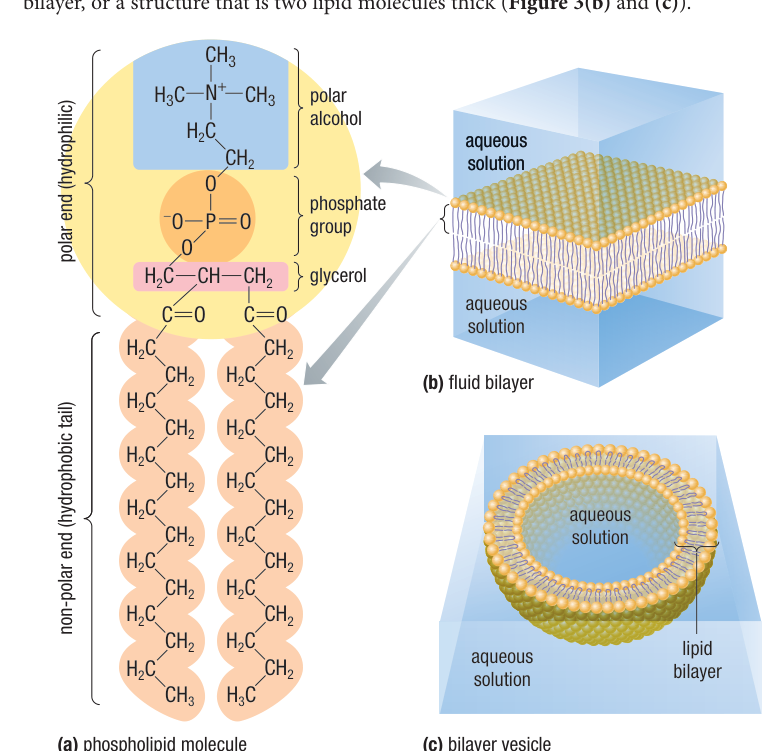
Figure 3 (Nelson p. 83): (a) Phospholipid molecule (b) Fluid bilayer (c) Bilayer vesicleAmino Acids, 4 Structural Levels & Denaturation
• Peptide Bond (–CO–NH–): Formed between the carboxyl group of one amino acid and the amino group of another via condensation.
• Primary ($1^\circ$): Linear sequence of amino acids held by covalent peptide bonds.
• Secondary ($2^\circ$): $\alpha$-helices and $\beta$-pleated sheets held by hydrogen bonds along polypeptide backbone.
• Tertiary ($3^\circ$): 3D globular shape driven by R-group interactions (hydrophobic clustering, ionic bonds, H-bonds, and disulfide bridges).
• Quaternary ($4^\circ$): Association of 2+ polypeptide subunits (e.g. Hemoglobin with 4 chains).
• Denaturation: Disruption of $2^\circ, 3^\circ, 4^\circ$ structure (leaves $1^\circ$ intact!) caused by extreme heat, pH deviations, or high salt.
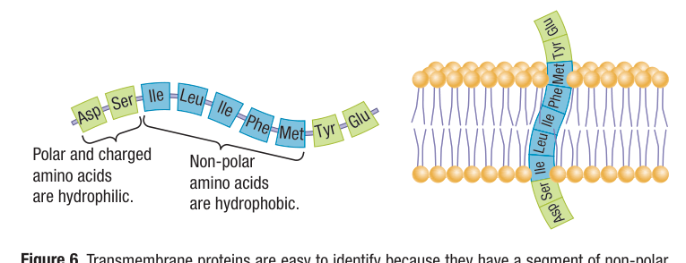
Figure 6 (Nelson p. 85): Nonpolar hydrophobic amino acids span bilayer; polar hydrophilic face water2. Enzymes, Kinetics Graphs & Industrial Applications
Catalytic mechanisms, inhibition types, substrate saturation, and textbook p. 56 manufacturing table.
Competitive Inhibition
The inhibitor molecule has a shape similar to the substrate and competes directly for the active site.
How to Overcome: Can be overcome by substantially increasing substrate concentration (more substrate out-competes the inhibitor for active sites).
Non-Competitive (Allosteric)
The inhibitor binds to an allosteric site (a separate site away from the active site), altering enzyme 3D shape so substrate cannot fit or react.
How to Overcome: CANNOT be overcome by adding more substrate!
Feedback Inhibition
The final end-product of a metabolic pathway allosterically binds to the first enzyme in the sequence.
Biological Importance: Shuts down the pathway when product concentration is high, preventing wasteful overproduction.
Enzyme Saturation & Concentration Graphs
• Substrate Concentration Curve: As $[\text{Substrate}]$ increases, rate rises sharply, then plateaus at maximum velocity ($V_{\max}$). At $V_{\max}$, every active site is occupied (**enzyme saturation**). Adding more substrate has no effect!
• Enzyme Concentration Curve: As $[\text{Enzyme}]$ increases, rate increases linearly (assuming excess substrate is present).
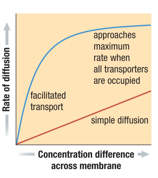
Saturation Kinetics Curve: Approaches maximum rate $V_{\max}$ when all sites are saturatedIndustrial & Manufacturing Enzymes
| Enzyme | Manufacturing Application | Function |
|---|---|---|
| Chymosin (Rennin) | Cheese making | Coagulates milk proteins to produce solid curds |
| Lactase | Lactose-free dairy products | Breaks lactose into glucose + galactose |
| Pectinase | Fruit juice manufacturing | Digests plant pectin to clarify cloudy fruit juices |
| Protease & Lipase | Laundry detergents | Breaks down blood/protein and grease stains at lower wash temps |
| Cellulase | Bioethanol & Denim textiles | Hydrolyzes cellulose biomass; softens denim in "stone washing" |
3. Cell Structures, Organelles & Endomembrane System
Test Requirement: Match structures with functions in 8–10 words or less (in your own words!).
Light vs Electron (SEM vs TEM)
- • Light Microscope: Uses lenses and visible light. Up to $1000\times$ magnification ($0.2\ \mu\text{m}$ resolution). Can view living cells and natural colors.
- • Electron Microscope (EM): Uses electron beams in a vacuum. Resolves down to $0.2\ \text{nm}$ ($1000\times$ higher detail!). Cells must be dead.
- • SEM (Scanning): Bounces electrons off surface $\to$ produces 3D surface topography.
- • TEM (Transmission): Transmits electrons through ultra-thin slices $\to$ reveals internal 2D ultrastructure.
Differential Centrifugation
Disrupts cells and spins them at increasing speeds to separate organelles by size and mass:
Interactive Organelle 8–10 Word Function Explorer
Click any organelle to review its exact 8–10 word test definition, appearance, and cellular role:
Endomembrane System
Membranes connected by physical contact or transport vesicles:
Nuclear Envelope $\to$ Rough/Smooth ER $\to$ Transport Vesicle $\to$ Golgi Apparatus $\to$ Secretory Vesicle $\to$ Plasma Membrane / Lysosome
Coordinates protein synthesis, processing, and secretion.
Endosymbiotic Theory
Mitochondria and chloroplasts were formerly free-living aerobic/photosynthetic bacteria engulfed by an ancestral host cell.
Evidence: Double membrane envelope, circular DNA, own 70S ribosomes, and self-replication by binary fission.
Cell-to-Cell Junctions
• Plasmodesmata: Channels perforating plant cell walls for cytoplasmic transport.
• Tight Junctions: Form watertight seals between animal epithelial cells.
• Desmosomes: Fasten cells together like rivets into strong sheets.
• Gap Junctions: Cytoplasmic channels allowing ions/signals to pass between animal cells.
4. The Fluid Mosaic Model of Membranes
Phospholipid bilayer, cholesterol buffer, glycolipids/glycoproteins, and membrane asymmetry.
Visualizing the Membrane (Handout & Textbook Diagrams)
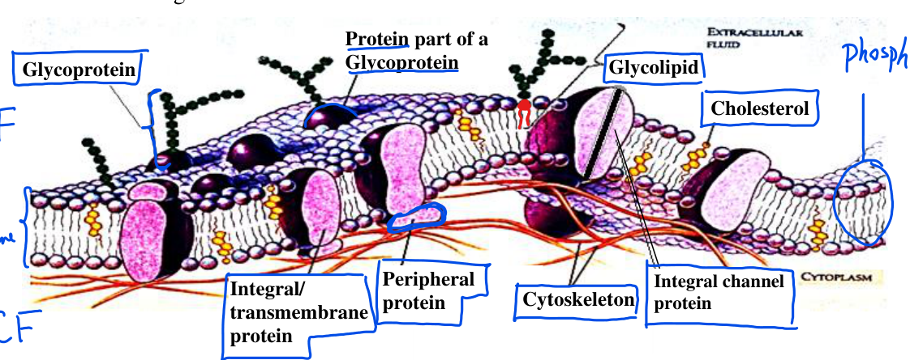
Class Handout Diagram: Labeled Bilayer, Integral Transmembrane, Peripheral, Cholesterol & Glycocalyx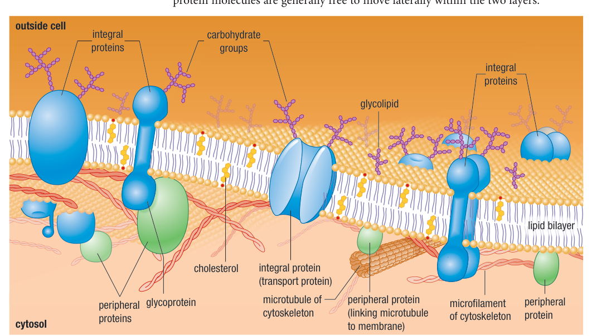
Figure 2 (Nelson p. 82): Proteins suspended individually in dynamic lipid bilayerCholesterol & Temperature Fluidity Buffer
Cholesterol is a steroid lipid found exclusively in animal cell membranes. Its hydrophilic –OH group extends into polar heads while its 4-ring non-polar body nests between fatty acid tails.
• At High Temperatures: Restrains movement of phospholipid molecules, reducing excess fluidity.
• At Low Temperatures: Prevents fatty acid tails from packing tightly, preventing membrane solidification/gelling.
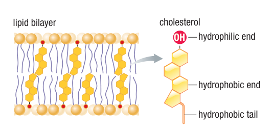
Figure 4 (Nelson p. 84): Cholesterol alignment in the lipid bilayerGlycocalyx & Membrane Asymmetry
- • Membrane Asymmetry: The outer and inner halves of the bilayer differ in lipid and protein composition, matching their specialized functions.
- • Extracellular Surface (ECF): Carbohydrate chains are attached to proteins (glycoproteins) or lipids (glycolipids). Found strictly on the extracellular side!
- • Cellular Fingerprints: Glycolipids and glycoproteins act as surface markers for cell-to-cell recognition (e.g. A, B, AB, O blood types; immune self vs non-self sorting).
- • Cytosolic Surface (ICF): Peripheral proteins anchor microfilaments and microtubules of the cytoskeleton to maintain cell shape.
5. 6 Protein Functions & Cystic Fibrosis (CFTR)
Recognizing the 6 membrane protein functions and mastering the CFTR chloride channel defect.
The 6 Specific Functions of Membrane Proteins (Handout Diagram)
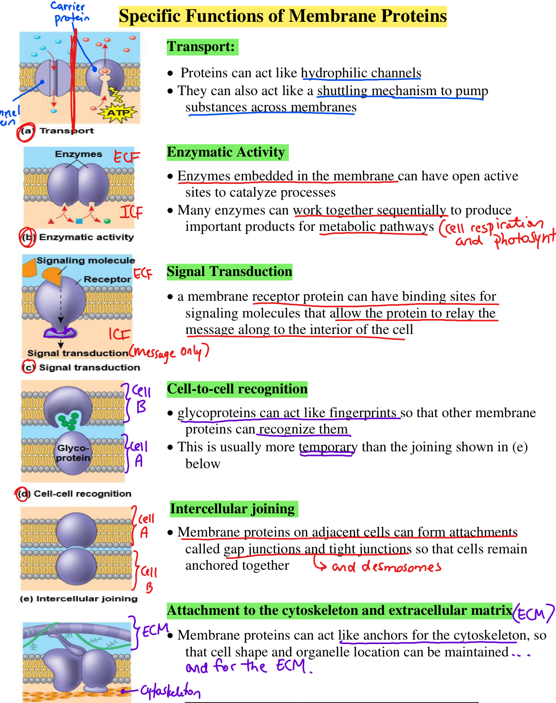
Handout Page 2: Transport, Enzymatic, Signal Transduction, Recognition, Joining, ECM/Cytoskeleton AttachmentCystic Fibrosis (CFTR Protein Malfunction)
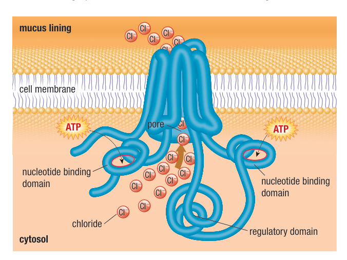
Figure 1 (Nelson p. 81): CFTR moves Cl⁻ out of cells to hydrate mucus lining6. Passive Transport, Tonicity & Dialysis Demo
Permeability hierarchy, osmosis in RBCs/plants, and the dialysis tubing starch/iodine/glucose demonstration.
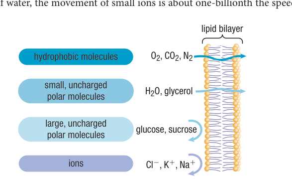
Figure 2 (Nelson p. 90): How Size and Charge Govern Membrane DiffusionMembrane Permeability Rules
- • Freely Permeable: Small, non-polar hydrophobic molecules ($\text{O}_2, \text{CO}_2, \text{N}_2$, steroid hormones) dissolve across lipid core easily.
- • Slowly Permeable: Small uncharged polar molecules ($\text{H}_2\text{O}$, glycerol).
- • Impermeable without Transporters: Large polar molecules (glucose, sucrose) and charged ions ($\text{Cl}^-, \text{K}^+, \text{Na}^+$) cannot cross unassisted!
Channel vs Carrier Proteins
• Channel Proteins: Hydrophilic pores through membrane (aquaporins for water; voltage-gated ion channels for nerve signals).
• Carrier Proteins: Bind specific solute (glucose, amino acid) and undergo a 4-step conformational shape change to shuttle solute down its concentration gradient.
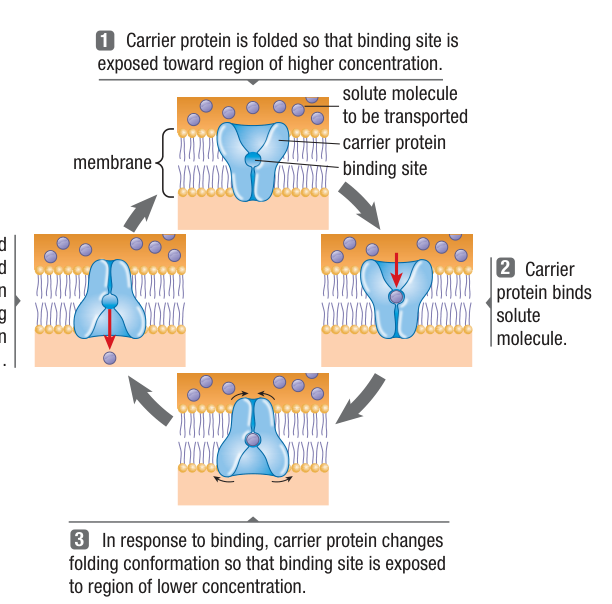
Figure 4 (Nelson p. 91): 4-Stage Carrier Protein Folding Conformation ChangeHypotonic, Hypertonic & Isotonic Solutions
• Hypotonic (Dilute outside): Water enters cell. Animal cells swell and burst (lysis); plant cells become firm and turgid (wall pressure prevents lysis).
• Hypertonic (Concentrated outside): Water exits cell. Animal cells shrink (crenation); plant cells undergo plasmolysis (membrane pulls away from wall).
• Isotonic: Equal solute concentrations. No net water flux.
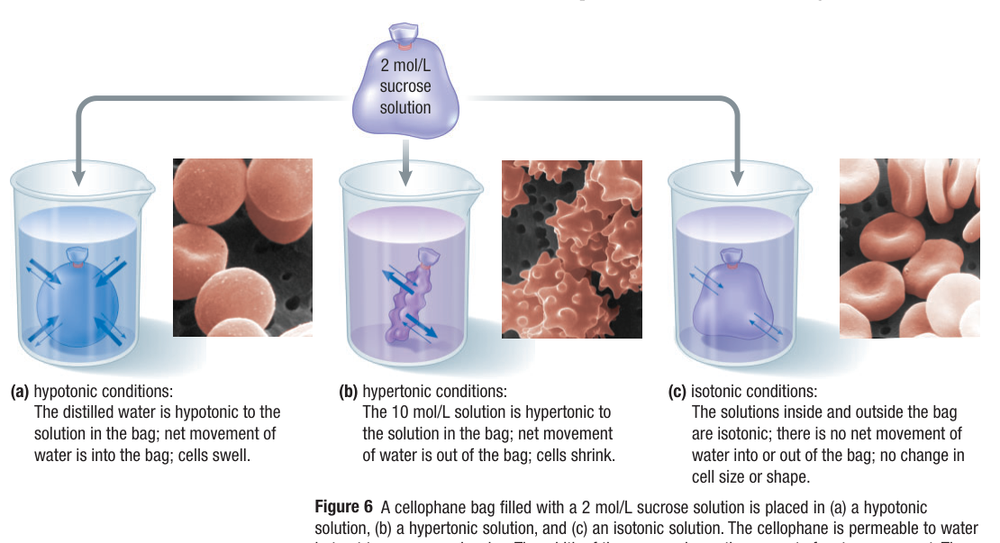
Figure 6 (Nelson p. 92): Micrographs of Red Blood Cells in Hypotonic, Hypertonic, and Isotonic ConditionsCell Model: Dialysis Tubing, Starch, Iodine & Benedict's Test
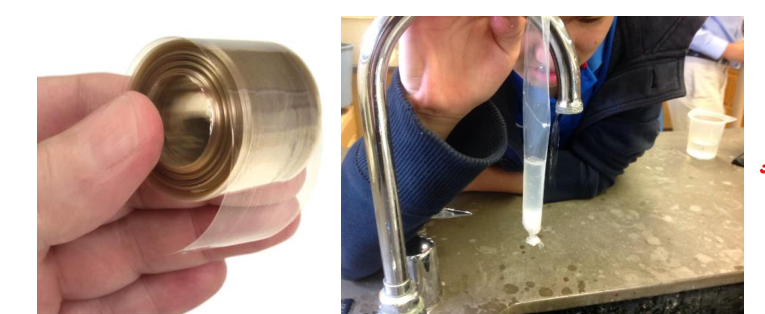
Dialysis Tubing is made of Cellulose with microscopic semi-permeable pores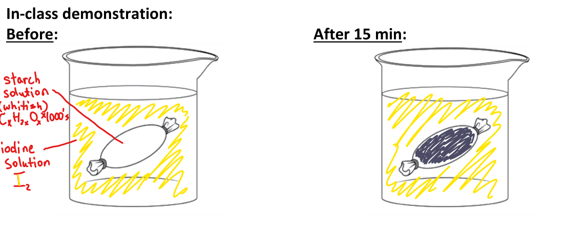
Inside turns bluish-black as small I₂ diffuses in; large starch cannot exit!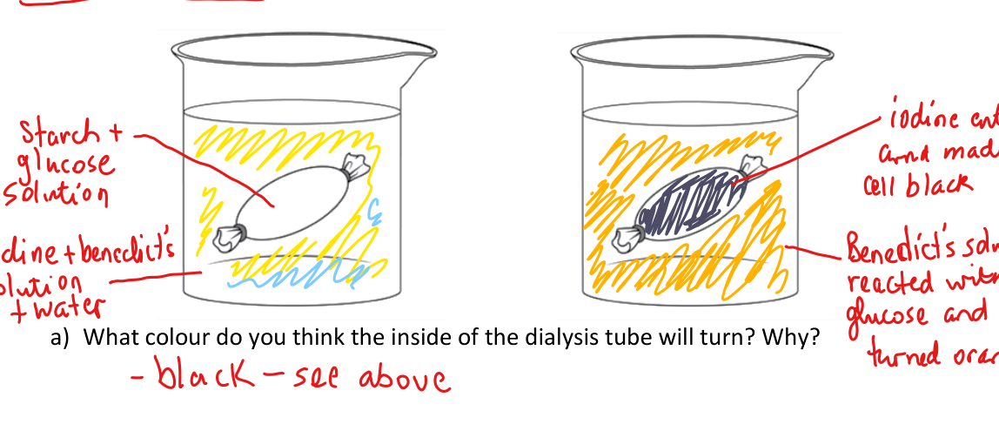
Beaker turns orange/red with Benedict's: small glucose diffuses out!
1. Why did the inside of the tubing turn black? Lugol's iodine ($ ext{I}_2$) is a small molecule that freely diffuses across the cellulose pores into the bag, reacting with starch to produce an intense bluish-black complex.
2. Why didn't starch exit into the beaker? Starch is a giant polymer (thousands of glucose units) whose large molecular size prevents it from squeezing through the microscopic cellulose pores.
3. Why did the beaker fluid turn orange with Benedict's solution? Glucose is a small single-ring monosaccharide that readily diffuses out of the tubing down its concentration gradient into the surrounding water.
4. Why did the tubing gain mass? The high concentration of glucose/starch inside made the cell model hypertonic to the water, drawing water IN by osmosis!
7. Active Transport (Pumps) & Bulk Transport
Primary pumps (Na⁺/K⁺), secondary symport vs antiport, and exocytosis/endocytosis pathways.
Primary Active Transport: ATP Hydrolysis & Ion Pumps
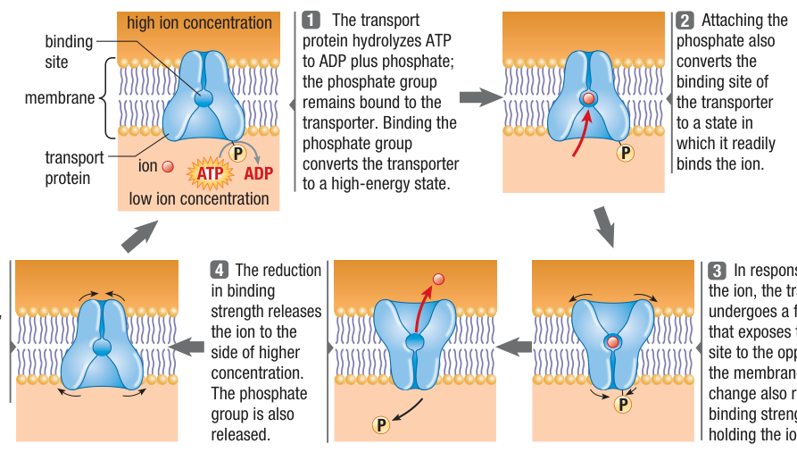
Figure 8 (Nelson p. 94): 5-Step Model of an ATP-Driven Active Transport PumpSymport vs Antiport
Uses the potential energy of an ion gradient (established by primary active transport) to drive the transport of another solute against its gradient:
• (a) Symport: Solute moves in the SAME direction as the driving ion (e.g. $ ext{Na}^+$-glucose cotransport in the gut).
• (b) Antiport: Solute moves in the OPPOSITE direction to the driving ion (e.g. $ ext{Na}^+/ ext{Ca}^{2+}$ or $ ext{Na}^+/ ext{H}^+$ exchange).
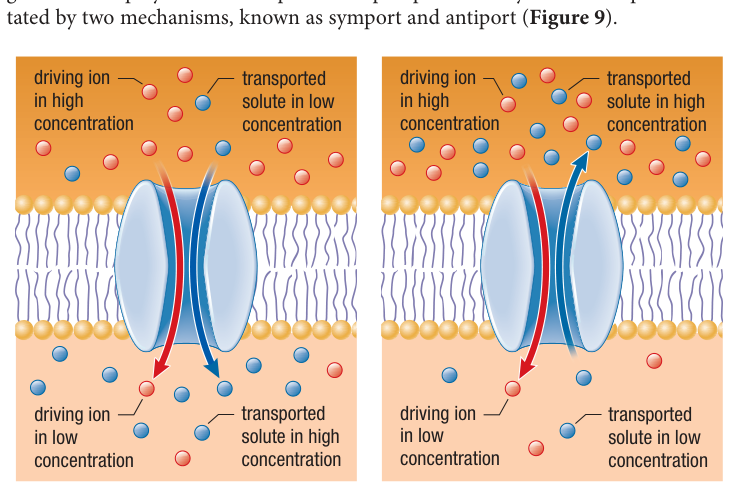
Figure 9 (Nelson p. 94): Symport (Same Direction) vs Antiport (Opposite Direction)Characteristics of Transport Mechanisms
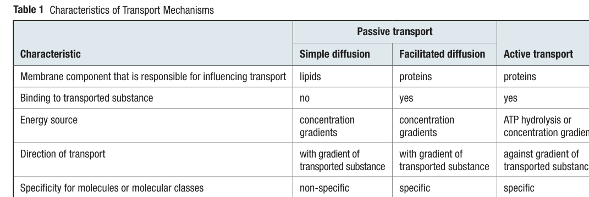
Table 1 (Nelson p. 95): Simple Diffusion vs Facilitated Diffusion vs Active TransportBulk Transport: Exocytosis & Endocytosis Pathways (Requires ATP)
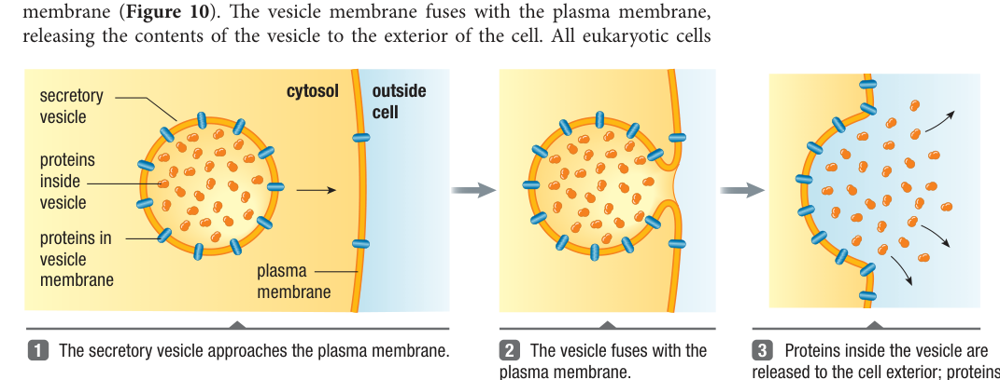
1. Exocytosis (Figure 10) Secretory vesicle fuses with plasma membrane, releasing cargo (hormones, digestive enzymes, plant cell wall sugars) outside.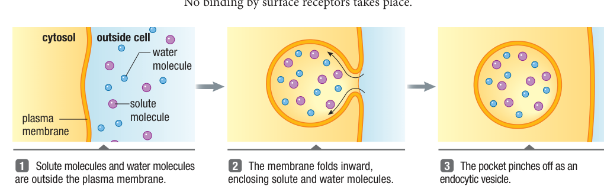
2. Pinocytosis ("Cell Drinking", Figure 11) Non-specific invagination taking in droplets of extracellular fluid and dissolved solutes.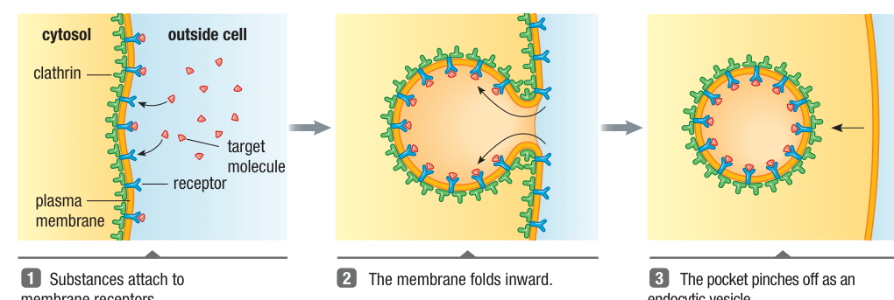
3. Receptor-Mediated Endocytosis (Figure 12) Specific ligands bind surface receptors, collect in clathrin-coated pits, pinch off as vesicles, and fuse with lysosomes.Ch. 3 & Ch. 4 Study Flashcards
Click the card to flip between Question and Answer.